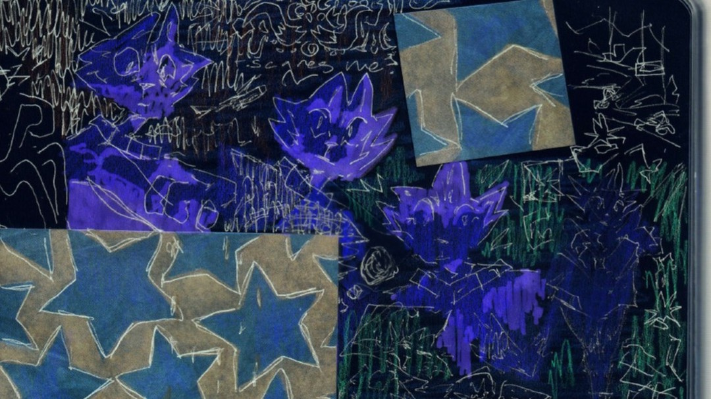
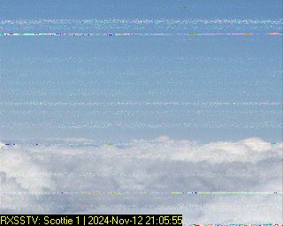
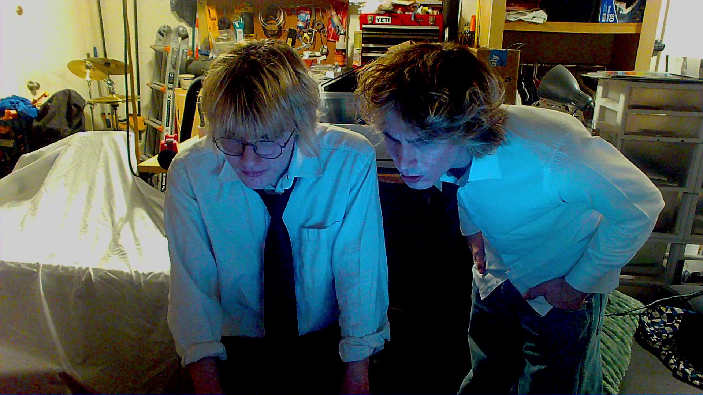
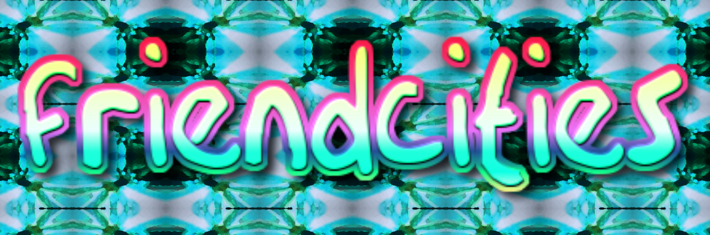

this is my current *main* project. mainly its a music project (for which i plan to make at least one album for) but i also plan to create a short film based on the ideas of the project (similar to that of the dead internet theory short film)
project for:
type:
greyhillstarslie



what is this?
the major themes of the project is infinity vs intimacy in the context of a coming of age story.
art that inspires ghsl
- night in the woods
- outer wilds
- donnie darko
- car seat headrest
- asteroid city
- the microphones
- serial experiments lain
info
dates: 2023 - current
contributors: just me (and lindsey for the blue stars image)
project types: music, film, writing, visual
why/how did you make this?
i am mainly making this to process my feeling on growing older and reconciling with the whole slyvia plath fig tree metaphor. but thats more of a symptom of the greater theme of my work of trying to reconcile everything outside of you against yourself.
i also wanted to make a project that was a bit more representative of me instead of a world i created that i wanted to share. this project is much more personal and autobiographical than other things i have worked on.
for the album im currently studying other artists and making songs without expectations so i can get to the skill level necessary to make the album.
for the short film, i plan on recording it exclusively using webcams over the course of a couple months to a year. i had to get a second phone (a prepaid one for $30) to do this, which was fun to set up. once i have enough footage i'll edit it all together in a style similar to dog star man (but with sound design).
tools used: fl studio, ableton live, premiere pro, obs
links and additional resources
b43ey

what is this?
b43ey is a conceptual ambient/noise music project focusing on the state of being subsumed into infinity and how our consciousness responds to it.
the main project of b43ey, dead internet theory, depicts how the human consciousness would experience inside the internet, exploring the loneliness and true weight of exisiting in a boundless, timeless reality, left with only the remnants of the people who used to exist there
art that inspires b43ey
- pantheon (tv)
- serial experiments lain
- merzbow
- 2003 toyota corolla
- belong (music)
- soma
- cowboy bebop
- sonny boy
info
dates: 2023 - current
contributors: just me :)
project types: visual, music, film
why/how did you make this?
im mainly making this project as a way to explore the distinct feeling of dreams/infinite reality i get. it also works as a way to explore the idea of dreamworlds, which are realties that come into existence via your cognition of them and which are defined by distinct feelings
i also really wanted to make an ambient music project that was less focused on songwriting and more on the feeling that came from the texture of the sound
currently, i work by starting with a sample, live signal, or synthesizer and improvise adding effects over it in fl studio. i then take this recording and put it into audacity where i chop and skew the clip until i like every part of it. after i have a decent amoung of clips i structure them together
i'm also exploring incorporating sstv images into the music somehow to depict how the human consciousness processes (or creates) visual information.
tools used: fl studio, ableton
links and additional resources
parker collab

what is this?
this project encapsulates pretty much everything me and parker work on together as the main goal of these projects is collaboration rather than a larger conceptual idea like my other projects.
this collaboration originally started after parker worked as the lead actor in dead internet theory (short film). since then we have worked on another short film and have attempted to write some songs (not much progress yet though).
info
dates: 2025 - current
contributors: harrison, parker
project types: music, film, collaboration
why/how did you make this?
most of the art ive created has been a solo endeavor for one reason or another so its been very rewarding as well as challenging to do collaborative work.
we've tried a bunch of different strategies for collaboration but for right now we usually have one person take the creative lead and have the other offer support to that idea.
we also typically work on time constraints since we live pretty far apart for the majority of the year which ensures that the projects get done and don't get stuck in development hell.
tools used: fl studio, premiere pro, teamwork :)
links and additional resources
friendcities

what is this?
friendcities is an arizona-based art magazine that celebrates art and community that i joined in late 2025
i mainly contribute photography and some writing to the volumes but the zine also has articles, videos, and interviews to check out as well.
projects ive done with friendcities
| vol10 | vol11 | vol12 |
|---|---|---|
| contributed a submission | attended launch party | tbd |
info
dates: 2025 - current
contributors: friendcities (too many names to list)
project types (what i contribute): visual, writing
why/how did you make this?
ive always wanted to be part of a greater community of artists and this has been a great opportunity to get that experience.
it also forces me to get more into creating visual works besides the photos i take which has been challenging but still fun. its also been nice to make small things that will get seen by other people.
for the contributions i typically do, i go into paint.net and arranged photos i've taken along with other graphics i make and mess around until it looks okay
i'm also planning on creating submissions for the zine with other people which will make the collaboration element even more awesome and fun
tools used: paint.net
links and additional resources
welcome to dreamworlds
new stuff
check this out
what is this?
hi! this is a website i made centralize all my art and act as my personal website. it is also my first website so i apologize if things are formatted a bit oddly. here is a look at my first attempt...
(ignore how much better and more awesome it looked)
info
dates: 3/31/26 - whenever i upload this lol
contributors: just me :)
type: visual, coding, writing
project for: other (general)
why/how did you make this?
like i said in the "what is this?" section, i mainly made this a one-click place for people to check out my art as well as a personal site for people to learn more about me.
the main reason im making this site now is because i took a web development class for fun and the final project was to make a site. which is perfect since it means i have a deadline to motivate me to actually finish it.
plus i have the additional pressure of having to get a project out each week due to this challenge i have with parker where i need to finish a project every week or i have to pay him $50.
so i've been pretty motivated to get it done lol. its only take me about a week of consistent work when im home to get it done and it almost here so yay!
tools used: vs code, paint.net
links and additional resources
night on the town

what is this?
this is a submission i made for vol 10 of friendcities!
the prompt was "night on the town" so i decided to make something that mixed coming-of-age accounts of life with the night as a kind of infinity in a way distinct from social infinity. i also mixed it with some light "bending reality with your own mind" sci-fi ideas which was inspired by donnie darko and kick the tragedy by drop nineteens. which is a world i hope to explore more in later projects.
info
dates: 12/5/2025
contributors: just me :)
type: visual, writing
project for: friendcities
why/how did you make this?
i made this since it was the 10th volume and andrue wanted everyone to contribute for it! i was a bit busy at the time but i was able to get this done in a day so it wasn't too much trouble.
it was also fun to make something quickly that wouldn't take me several months of work to do :p. plus i learned a decent bit doing it so my next submission will hopefully be much better (im not a big fan of the composition in this one)
i started by finding a photo that i thought would act as a nice background and then blended it with some drawings and other photos. after that i wrote out a bunch of text that felt like the image and put it on the left side. lastly i put a datamoshing effect from website (im not sure which one but if i find it i'll link it).
tools used: paint.net
links and additional resources
dead internet theory (short film)
what is this?
dead internet theory is a short film based off the b43ey album of the same name. however, its less about computers and more about exploring a similar kind of reality to dead internet theory, which means the name is a little off the mark but its okay.
dead internet theory is also the first short film i have done and it came out a lot better than i expected, but i also had experience with all the skills surrounding film (video editing, photography/camera operation, etc). the most valuable lesson i learned from this project is that film can be a very effective way of exploring my ideas while collaborating with others in a way i had not considered before.
info
dates: 3/9/25-10/10/25
contributors: harrison and parker
type: film
project for: parker collab
why/how did you make this?
im not gonna lie the main reason i made this short film is because i was taking an independent film class and need to make an experimental short film for the final project. however, along the way, i realized that making short films is actually really fun and something i want to do with people way more often.
for the most part this entire project was improvised. i had an idea in my head about how it could go and wanted to try it. i based scenes on the environments i had access to and the some technical things i knew i could pull off. the elements i knew before shooting is that the blue projector screen represented a kind of init or abstract state, the protagonist needed to wear a dress shirt and look dishelved, and thats pretty much it. most of the intentional thematic decisions were done while editing and a lot of them were more informed by feeling that logic.
i also created all the sound for this project in the same workflow as the b43ey project which i think gave the film an interesting atmosphere.
tools used: audacity, fl studio, premiere pro
links and additional resources
barren desert, concrete spires

what is this?
barren desert, concrete spires (bdcs) is not my first music project. however it is the first one that i think is worth listing. the album is best described as a high school project. it was incredibly ambitious and emotional therefore i thought necessitated perfection from me. the album was also mainly about a relationship and my reaction to it, which is definitely the most "high school" part of it
as a result of the pressure i put on the album, it took nearly 3 years to complete. i also lacked a lot of the skills necessary to create an album which didn't help. after a while i stopped feeling the emotions of it and just wanted to get it out, which im glad i did since now i look back on it in a more positive light as i think it creates a pretty nice atmosphere, decent track variety, and (to me) a very distinct way of telling its story through post rock, field recordings, and ambient music. it does have some pretty big issues, like the mixing is extremely hit or miss though since a good 8 months of the album was spent trying to the lo-fi recorded album sound less lo-fi which went against my whole vision in the first place. (like seriously one of the major inspirations was have a nice life's deathconsciousness and that whole album is horrible quality)
anyways, it marks the start of my more conceptual art and im surprised i didnt play silent hill 2 before i released this because the radio static/barren environment/cyclical imagery is so similar AND the plot follows someone avoiding guilt via self-punishment and descension, like brah.
info
dates: 3/9/25-10/10/25
contributors: just me :p
type: music, album
project for: crow north railway station
why/how did you make this?
i made this album because i had just really into more conceptual music and also had an inner world that i needed to express. a distinct memory that inspired the album was when i was driving home from prom with the person the album is mainly about (see why i call this a high school album) while listening to have a nice life's deathconsciousness. in the city i live in there is a lot of factories and industrial areas along the edges of the suburban areas and the coldness of that area in the context of night gave me the idea of someone descending into a reality created by their self-punishment and isolation. so in a way the album is very autobiographical as that effectively what i wanted to do. which is why i decided to give the album a nice ending as i thought there was hope at the end of the hardship, which there was.
the development of this album is a real mess since i had no idea what i was doing but generally i would create demos that would inspire narrative beats and then those would inspire more demos. i had to brute force my way through most phases of developing the songs since it was my first time doing vocals, lyrics, mixing, mastering and all that fun stuff. overall im decently happy with the result and enjoy it for what it is, knowing i learned a lot from the experience. plus some sections genuinely are quite good, like the cyclical structure of coyotes, like maybe i was cooking a little bit...
tools used: fl studio, paint.net, audacity